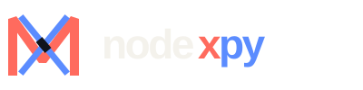
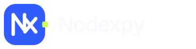
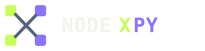

Ribbon Knot
A woven N/X mark expressing visual paths crossing through a shared runtime.
EXPRESSIVEThese concepts intentionally step away from conventional SaaS symbols through sharper geometry, custom typographic treatment, and controlled palette changes.




